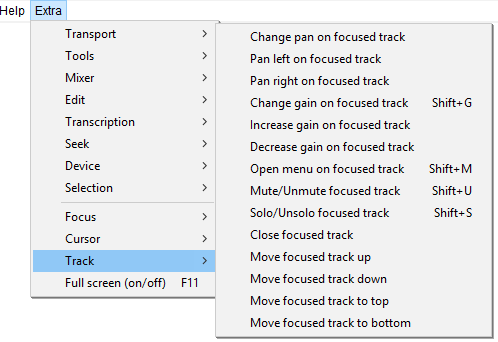

Extra Menu: Track
- Click, or hover, on any menu item in the image to read about that command. Skip the image
- 
Change pan on focused track Shift+P Extra
Brings up the Pan dialog for the focused track where you can enter a pan value, or use the slider for finer control of panning than is available when using the track pan slider.
Pan left on focused track Alt+Shift+Left Extra
Controls the pan slider on the focused track. Each keypress changes the pan value by 10% left.
Pan right on focused track Alt+Shift+Right Extra
Controls the pan slider on the focused track. Each keypress changes the pan value by 10% right.
Change gain on focused track Shift+G
Brings up the Gain dialog for the focused track where you can enter a gain value, or use the slider for finer control of gain than is available when using the track pan slider.
Increase gain on focused track Alt+Shift+Up Extra
Controls the gain slider on the focused track. Each keypress increases the gain value by 1 dB.
Decrease gain on focused track Alt+Shift+Down Extra
Controls the gain slider on the focused track. Each keypress decreases the gain value by 1 dB.
Opens the Audio Track Dropdown Menu on the focused audio track or other track type. In the audio track dropdown, use Up, and Down, arrow keys to navigate the menu and Enter, to select a menu item. Use Right, arrow to open the "Set Sample Format" and "Set Rate" choices or Left, arrow to leave those choices.
Mute/Unmute focused track Shift+U
Toggles the Mute button on the focused track.
Solo/Unsolo focused track Shift+S
Toggles the Solo button on the focused track.
Close focused track Shift+C Extra
Close (delete) the focused track
Move focused track up
Moves the focused track up by one track and moves the focus there.
Move focused track down
Moves the focused track down by one track and moves the focus there.
Move focused track to top
Moves the focused track up to the top of the track table and moves the focus there.
Move focused track to bottom
Moves the focused track down to the bottom of the track table and moves the focus there.